9th to 11th September 2024
We have arrived by train to Hakodate, a seaside city on the southern tip of Hokkaido. I mostly decided to come here as I wanted to travel to Honshu by ferry and this is where the terminal across the Tsugaru Strait is. However Hakodate turned out to be more than just a layover town with lots to do and see.
札幌から函館までの北斗電車
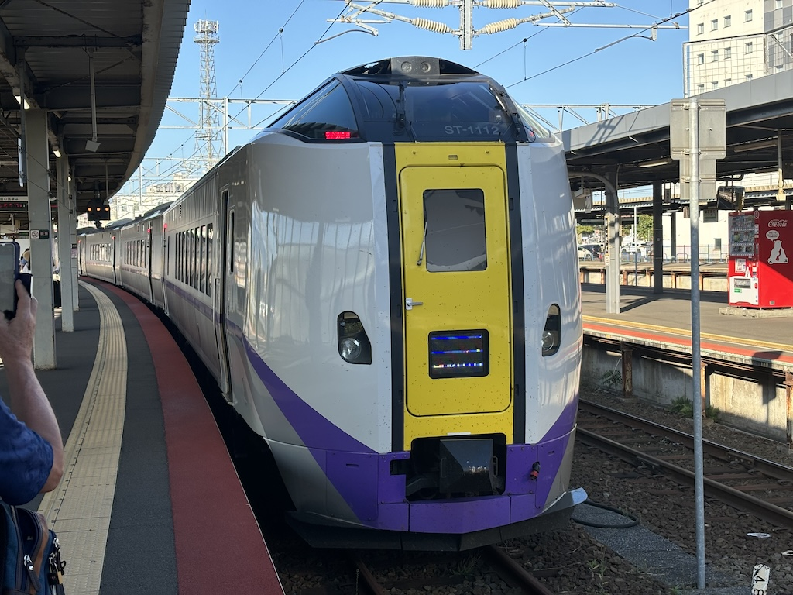After disembarking from the train I walked all the way to the ticket barrier before I realised I left my ticket in my seat. Fortunately the staff member that I first approached had picked it up and after some very broken Japanese from yours truly he pulled it out of his pocket and gave it back to me. Heading into town I passed the Kanemori Red Brick Warehouse, a mall full of souvenirs shops, restaurants and the smallest post office booth I've ever bought post stamps from. It is on the left hand side in the photo below. Other than buying stamps I pretty much just went to bed - it's not big enough a place to have a night life, at least not in this part of town.
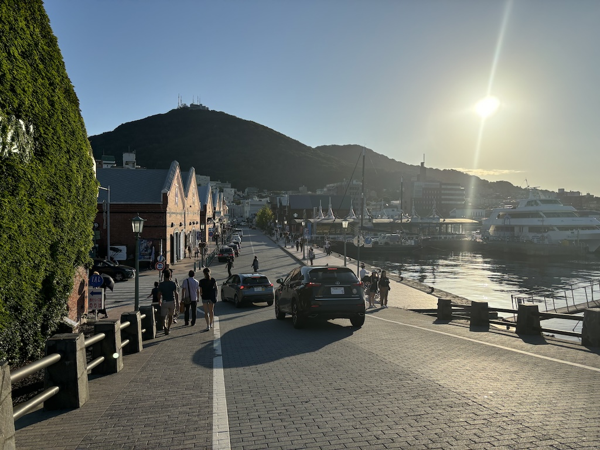It's the next morning and first things first I need some good breakfast. In a town with good seafood I of course went straight to the Hakodate Morning Market. I ordered crab legs in miso soup and tempura rice, only costing around 800 yen. It tasted very good, although I did struggle to eat the crab legs, unsure if I should bite into it like a chicken drumstick or scoop the insides out like a lobster.
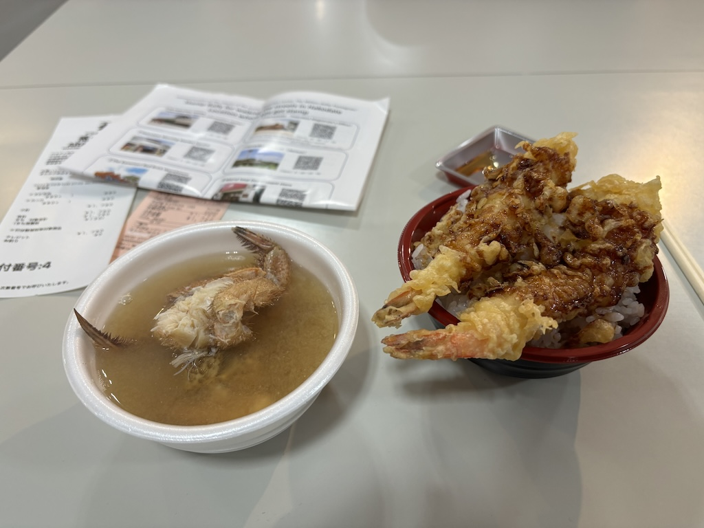At the end of my meal a smiling lady started talking to me in Japanese. After a lot of struggling back and forth to communicate I eventually got a translator out and ask her to speak into it. The translated response came back as "you are very good using chopsticks". It was a heartwarming moment and I thanked her for the kind words. I explained a bit about where I am from and where I'm going in Japan before recycling my breakfast bowls and heading out. What a nice lady.
A 45 minute walk later and I'm at the summit of Hakodate mountain. It's surprisingly short and made me glad I saved the yen on the cable car. Same scenic view but no fare required.
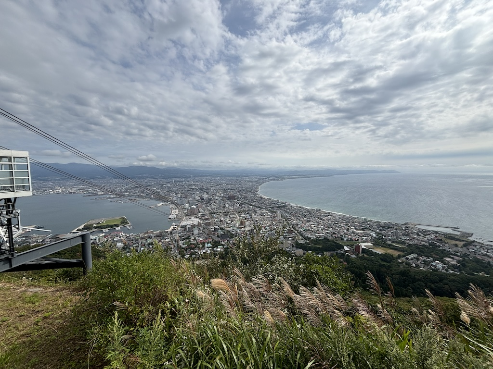I was very thirsty at this point and didn't realise the little inside space by the observation deck didn't open until 10AM. While waiting and rationing the last of my water I saw this plaque. It talks about the first people from Japan visiting the site of Hakodate in Hokkaido. The bottom left I'm fairly confident says April 1957, and the bottom right is definitely Hakodate. Beyond that I'm at the mercy of google translate so can't be certain what it says. If you can read this please let me know!
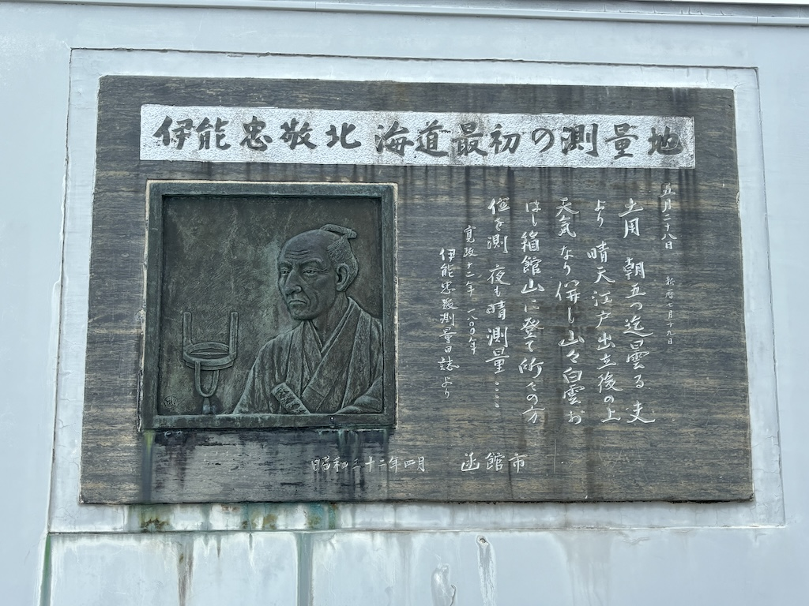I took a different walk down and went straight through the back of the Buddhist temple Shomyo-ji (称名寺).
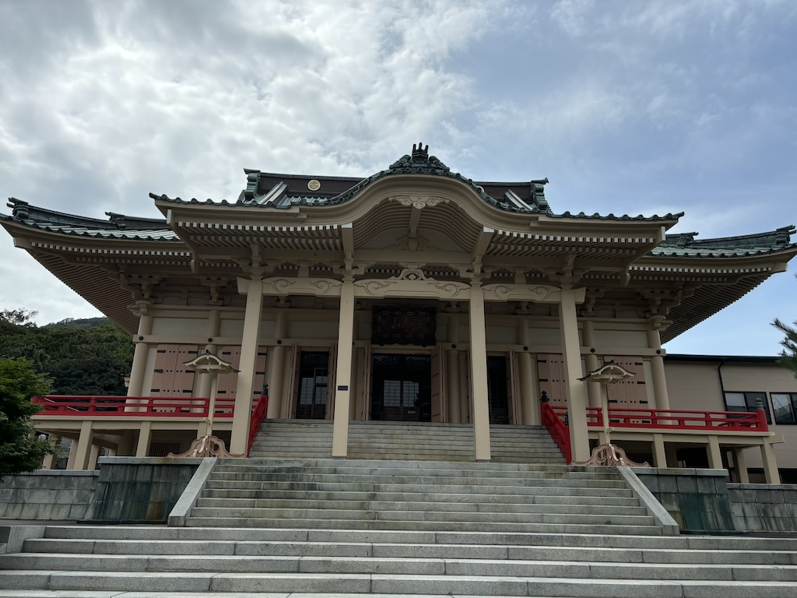Walking back towards town I also visited the Old Public Ward of Hakodate. It is a western designed house built in 1910 with a large publicly used meeting hall. It was restored a few years ago to its original yellow and blue colours and was only 150 yen to look around. A bit like in some historic sites in the UK they had a optional paid experience where you could dress up in traditional (almost Victorian looking) clothes. When planning this trip to Japan I definitely didn't expect to see Japanese women wearing traditional western looking clothes in a English looking manor house.
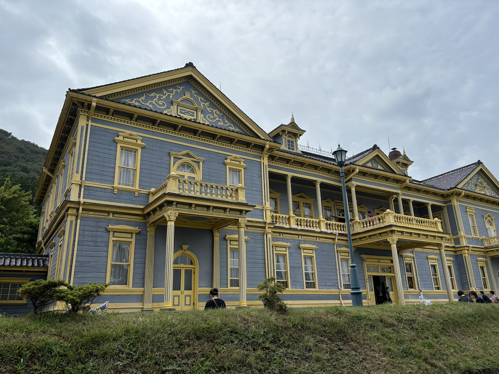Japan is known for having very pretty manhole covers, unique to the town or city you are in. Where other countries just engrave the town name and call it a day, Japanese towns cast detailed illustrations of the iconic aspects of the town. Stay tuned for a post on all the manhole covers I saw in Japan (or don't, I can totally see why people wouldn't find that interesting). For now enjoy this painted one, depicting the Orthodox church by Hakodate Mountain.
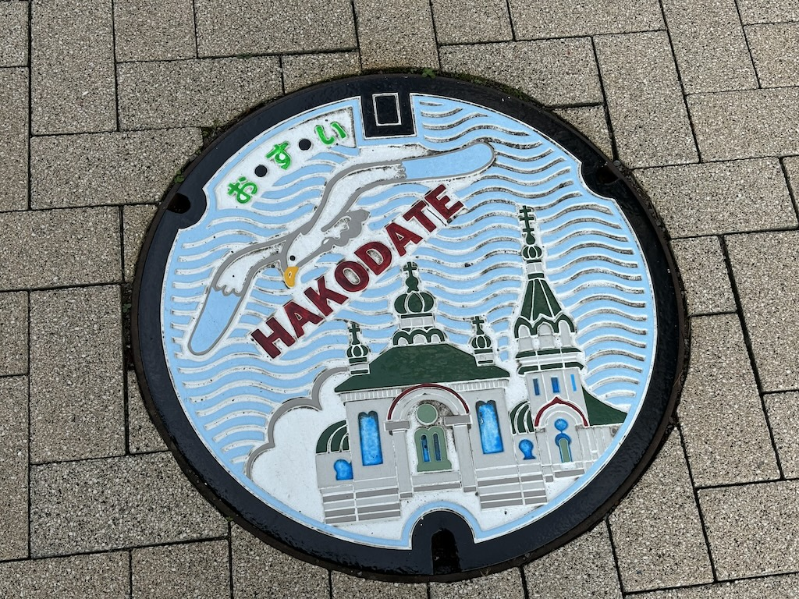As you're reading a Ch0live post about a city somewhere, it of course wouldn't be complete without discussing the trams. Hakodate's are a complete mixture of old and new.
The one I saw in the morning (clearly quite new) had a very modern and sleek design. This one was powered using a pantograph and was 2 carriages long with a bendy walkable connector.
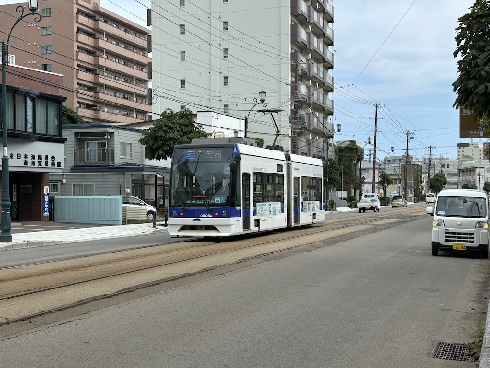The one I rode after lunch was much older, narrower and just a single carriage. Although it wobbled along the track like it was going to fly off into traffic, I preferred this ride. The older box design made of sturdy metal is much prettier in my opinion than the more plain and plastic covered alternative from earlier in the day. It seems instead of replacing the older routes the council here have just built new ones.
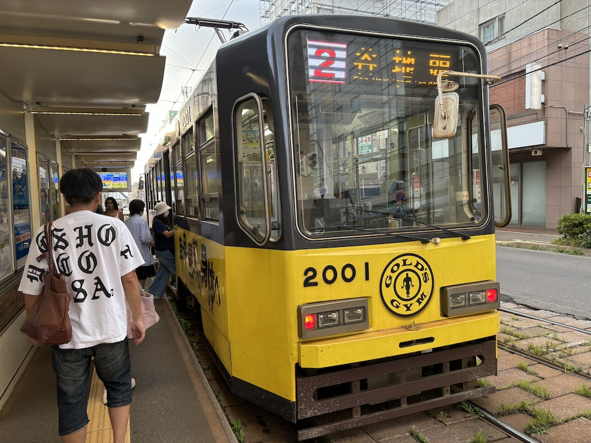五稜郭
One short tram ride later and we're at Goryōkaku which apparently literally means 'five-point-star'. Built at the very end of the Edo period (1860s) it was one of Japans few castles with a western influenced design. Being very big it really is quite eye-catching when looking at the city map.
This is the Former Magistrate Office built in the center of the fort grounds. To make clear how big the full facility would have been markings have been left on the ground to show where the original building extended to. According to a sign I translated using my phone only 1/3rd of this structure is still intact.
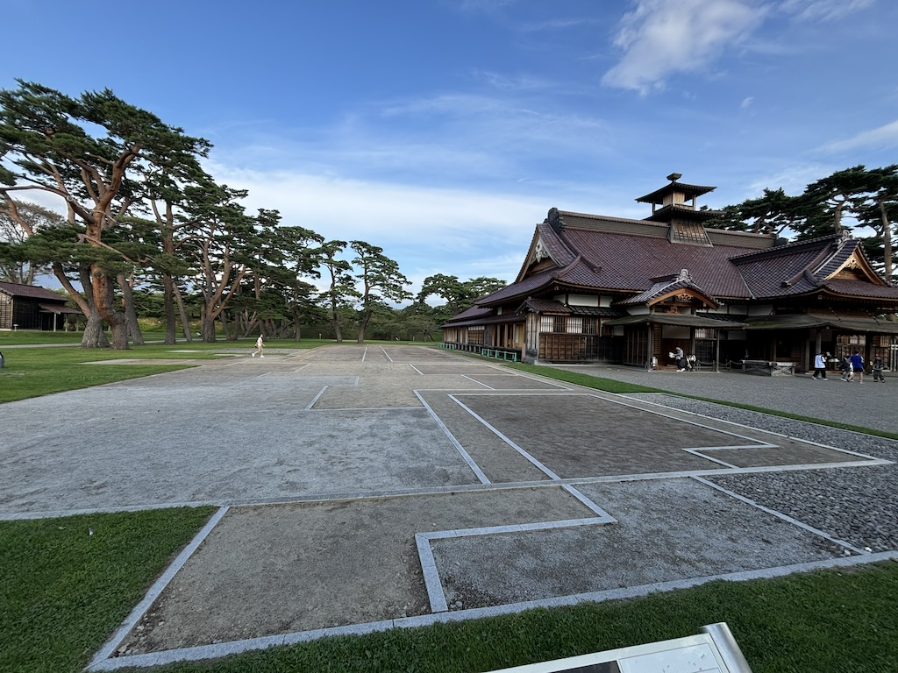One tram ride back and I'm almost home. Here's a photo of the Red Brick Warehouse and harbour at dusk. The moss on the front left warehouse looks great illuminated in the dark.
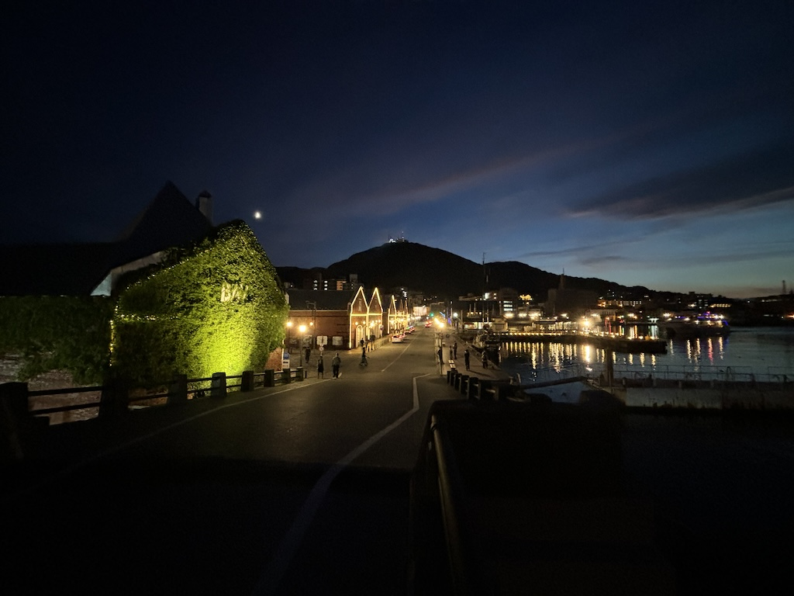That evening I went to Lucky Pierrot Hamburger. After posting a photo on Instagram of the set meal I ordered I did have a friend message me asking why I was eating hamburgers while in Japan. This chain is exclusive to Hakodate city and as such I decided it was a culturally appropriate place to go for dinner. The chinese-style chicken burger, chips in a mug and unsweetened ice tea were all pretty good and at a great price point (think around 880 yen). What I did find weird was this free plastic wallet I was given when leaving the branch. A member of staff literally chased me out the door to deliver this gift to me. It wasn't on my table and the restaurant doesn't do table service meaning this staff member from behind the till or in the kitchen abandoned her post to give me this. Perhaps it was because I'm white and they thought it will be good advertisement? Well either way I appreciate the gift and will use it to protect any paper I have from now on.
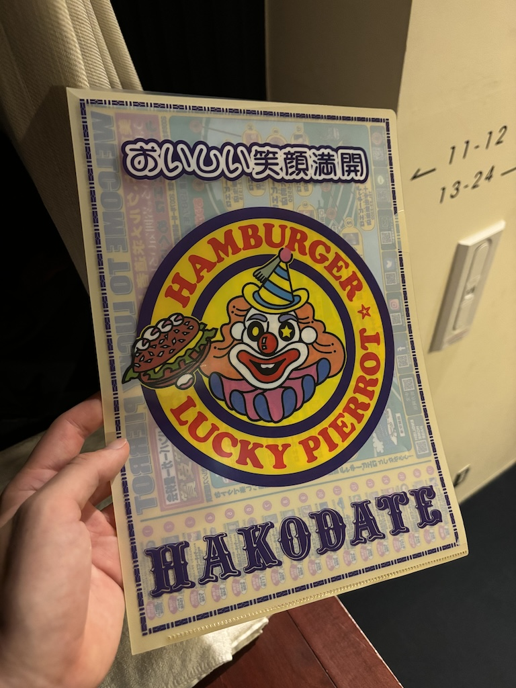This morning I packed my bag and headed to the ferry terminal to Honshu. At the last minute I picked up this locally grown melon. There's lots of drinks and food stuffs based on this exact breed of melon here so I felt obliged to try it. Like all melons it was sweet and juicy, would recommend.
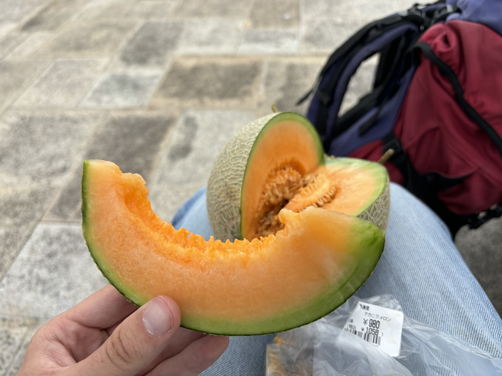Here's the ticket I was issued. Japan seem to make all their public transport tickets just that little bit prettier. The dolphin emoji at the top and faded print in the back is a great mascot for the ferry company, much prettier than any ticket I've received crossing the channel. One for the plastic wallet!
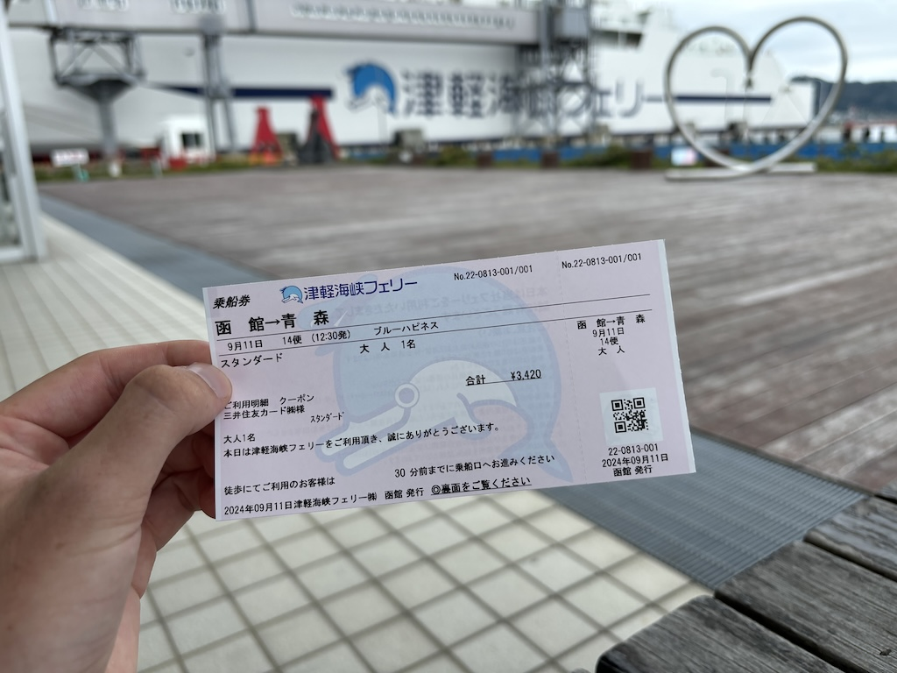Time to explore the mainland! Otherwise home is here.